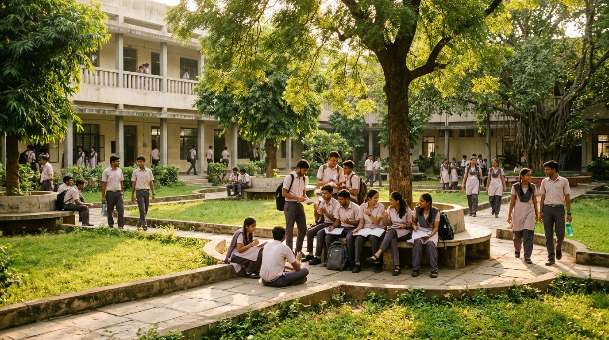
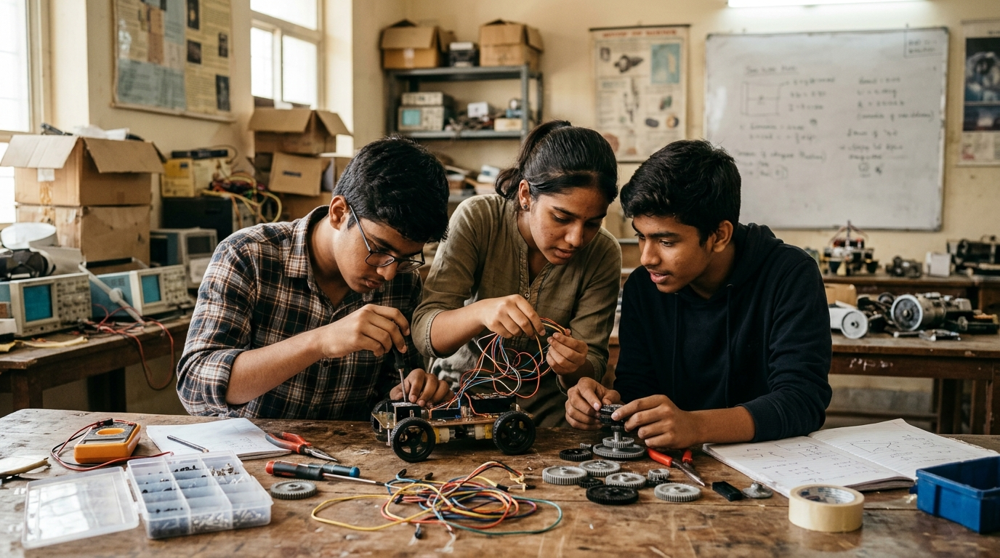
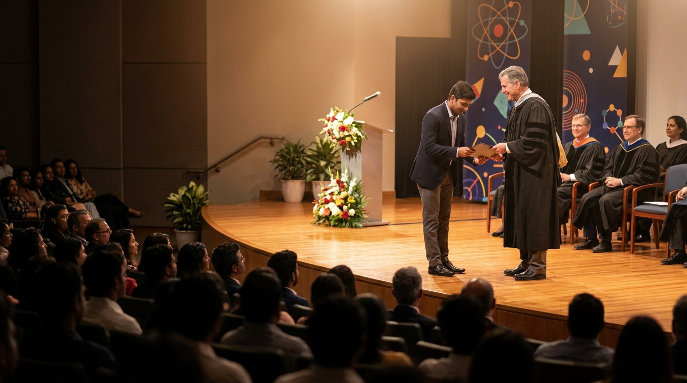

A Dynamic Academic Community
While Intermediate MPC studies demand concentrated intellectual discipline, a truly formative junior college journey nurtures curiosity, teamwork, leadership, and emotional well-being.
Our campus environment encourages healthy peer competition, intellectual exploration through clubs and exhibitions, and structured co-curricular opportunities that empower students to express their ideas articulately and develop lifelong self-confidence.

Academic Clubs & Competitions
Platforms that channel students' natural inquisitiveness into creative scientific outputs.

Science Exhibitions & Projects
Students design working models, solar-powered generators, automated circuit switches, and chemistry demonstration displays for annual academic science fairs.
Mathematics Competitions & Olympiads
Inter-class problem-solving tournaments, logic riddle marathons, and mental calculation sprints that challenge abstract computational agility.
Academic Quiz Competitions
Brisk general science and technology quiz bowls covering scientific breakthroughs, aerospace milestones, Nobel laureates, and Indian contributions to science.
Sports, Culture & Seminars
Balancing rigorous mental exertion with physical recreation and creative self-expression.

Sports & Physical Recreation
Indoor sports such as table tennis, badminton, and chess promote physical vitality, strategic anticipation, and healthy stress relief during demanding academic terms.

Cultural Events & Celebrations
National science day observances, annual felicitation ceremonies, debate sessions, and elocution contests foster camaraderie and public speaking skills.

Student Seminars & Workshops
Peer seminar presentations where Intermediate students deliver short 10-minute talks on interesting physics paradoxes, calculus histories, or green chemistry innovations.
The Student Development Blueprint
Cultivating competencies that will serve students throughout undergraduate studies and professional engineering careers.
1. Conceptual Articulation
Teaching students how to explain a difficult theorem in simple words, developing deep intellectual mastery and superior written communication for board and university exams.
2. Analytical Resilience
Helping students embrace difficult mathematical proofs and challenging physics problems with patience, viewing mistakes as feedback rather than failure.
3. Peer Collaborative Learning
Encouraging group study sessions where students test each other on formulas, review reaction mechanisms, and work together on laboratory observations.
4. Time Allocation Discipline
Training students to segment their study hours across the three MPC subjects daily, preventing subject bias and ensuring steady continuous revision.
PLAN YOUR FUTURE BEYOND INTERMEDIATE
Explore career pathways after MPC: Engineering, Computer Science, Architecture, Pure Sciences, and National Defence.